-
February Meetup
February 19th, 2023 - 2-5pm
Fairweather Cider 10609 Metric Blvd #108, Austin, TX 78758
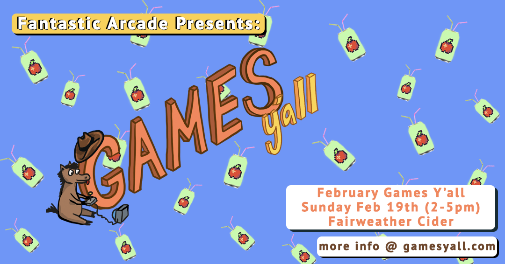Howdy y’all, what an adventure! Thank you to Fairweather Cider for hosting us for our February meetup. Thank you to our the devs and digital artists who showcased!
Fairweather Cider offers wine, cider, and various non-alcoholic options. There is a coffee shop (All Gimmicks Coffee) as well as a food truck (Spicy Boy’s) on site.
Games Y'all + Fantastic Arcade
Games Y’all is a meetup presented by Fantastic Arcade & The Museum of Human Achievement, held every month at venues around Austin for indie devs, digital artists, and games fans.
Fantastic Arcade celebrates, amplifies, and supports the unique and underrepresented within indie games and beyond.Games This Month
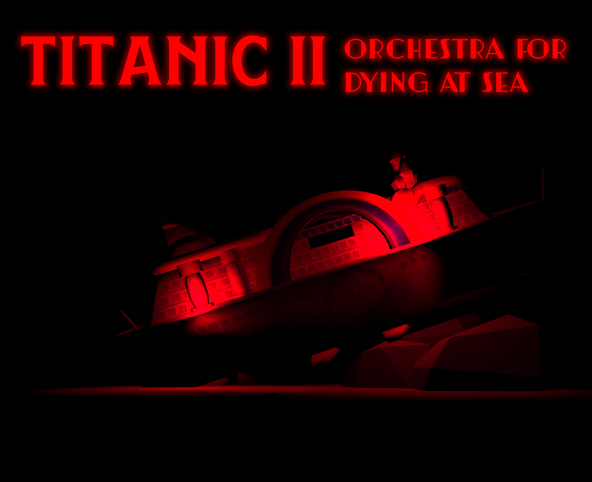Titanic II: Orchestra For Dying At Sea
Tragedy is comedy & comedy is tragedy. In this dying simulator, sacrifice your life to save the one you love from drowning in the icy waters of the Atlantic, sink to the bottom of the ocean floor and experience the strange, eccentric, & haunting world between life and death, memory and reality.
Developer: Flan Falacci
@big__flan

Big Bag

@bigflan
 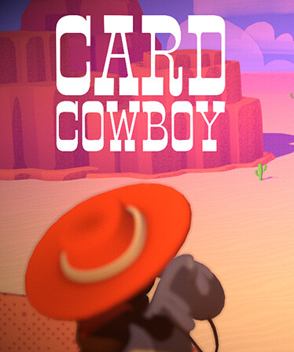
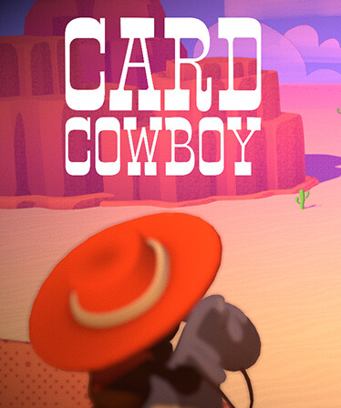Card Cowboy
Card Cowboy is a short, silly adventure game about using cards to explore the Wild West and try to get revenge on a Gunman 'who killed your dad, wooed your mom, and kicked your dog'. Your cards represent different cowboy core concepts like Gun, Lasso, Whiskey, and Horse and when you use them in different situations the game tries to build on or make jokes around your expectations.
You TOO can get revenge! Card Cowboy's voice actor Max Hudetz will be attending our February meetup to do a live reading! Form a team and shout your moves for a live version of Card Cowboy!
Card Cowboy was made by Brieyh’leai, Nic, Karley, Max, Tom, and Chris as part of a bi-annual game jam for our close friend group. Every 6 months or so, we book an Airbnb for a long weekend to jam together. Our theme this time was Cowboys!Publisher: Luckshot Games
Developers: Brieyh’leai, Nic, Karley, Max, Tom, and Chris
@comfyfish
@gleefulbeest
@max___hue

@tomaeusd
@NicLupfer
@chriswade__
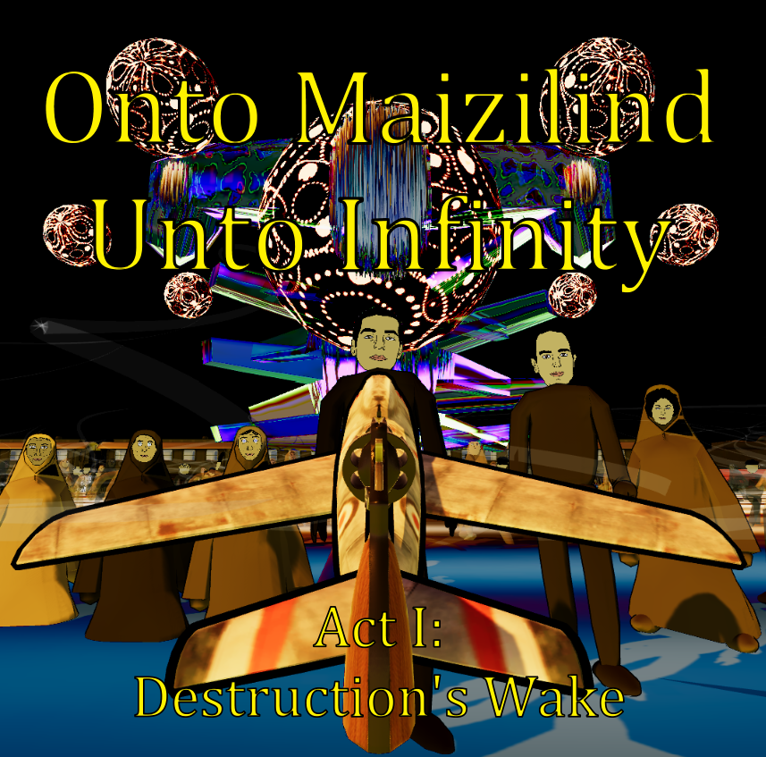Onto Maizilind Unto Infinity
Onto Maizilind Unto Infinity (OMUI) is a game about humankind's suicidal instincts, interweaving grand geopolitical destruction with personal tragedy.
It plays much like any other ‘Gone Home-like’ at first, but when you enter the living room it evolves into an interactive family drama - whereby the childhood desire to play distracts and disrupts the narrative delivery of larger historical exposition and context. As these forces are layered and intermingled, the slow buildup of apocalyptic horror elements crescendo to a climax unlike most other works in the horror genre. OMUI draws more from film, theater, and history to orient itself as it descends into a surreal madness. The pieces are sewn together in a dream-like cacophony, amounting to a world-ending nightmare and heartfelt elegy for the dead.
For those mourners who refuse to forget but have been told over and over ‘the past is the past’, ‘that’s life’, or any other attempt to wave away impactful traumas: OMUI stands like a rock, resolutely relaying the message that the past is always with us, conditioning the present and determining our possible futures.Developer: Kas Ghobadi
@theStaticMan
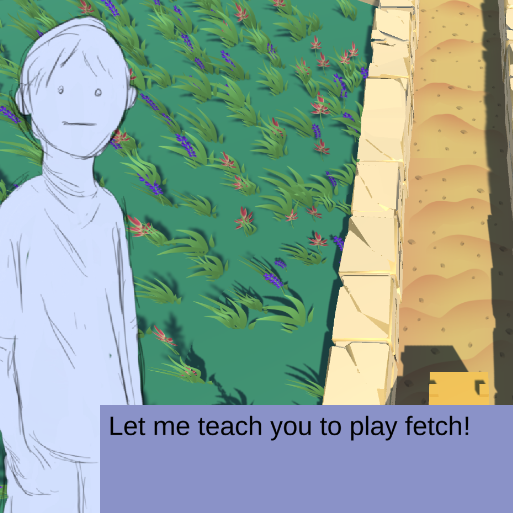Fetch Quest!
Fetch Quest is an adventure game inspired by the tropes of classic Japanese RPGs. As a dog, your day to day routine consists of sleeping, eating, and playing fetch! But what adventures would the dog have if he decided to wander off the beaten path? Currently being built up by a small team of ACC grads, this is a super early build of the game, but we're excited to see an audience response!
Developers:
Delaney Bannon
Josh Bishop
Yari Elizondo
Randall Jackson
Joseph Sterling Johnson
Phillip Latham
Logan Miller
Seth Shrader
AJ Smith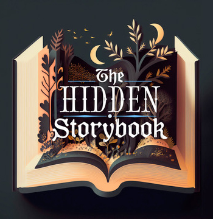The Hidden Storybook
Poof! You are transformed into the main character of your very own fairytale, with a host of magical beings and woodland creatures who'll help you with your everyday tasks.
The Hidden Storybook is a motivational storytelling app that helps turn your everyday tasks magical. In our first installment, you, no matter who you are in real life, become someone who is capable, energetic, and great at getting things done: Cinderella. Want inspiration and company while you clean your house or exercise? We’ve got you. The Hidden Storybook brings you into a world where your Fairy Godmother and a group of friendly woodland creatures are right by your side.
Need some tough love? Your stepmother and stepsisters provide extra motivation along the way. Not only do these fairy tale characters provide great company, they also have handy tips for more effective and joyful cleaning and moving. And jokes. Everybody likes jokes!Developers: The Hidden Room Theatre and Make Every Media, LLC
@MakeEveryMediaATX
 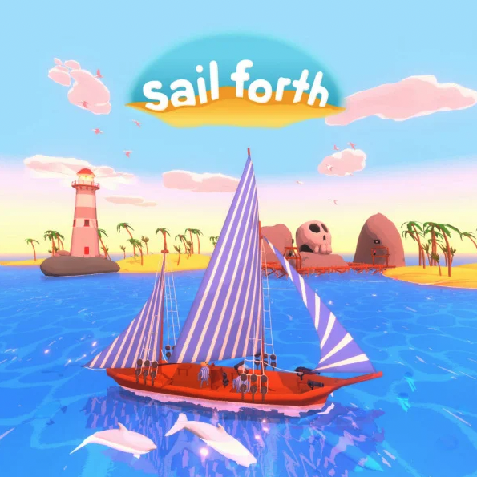
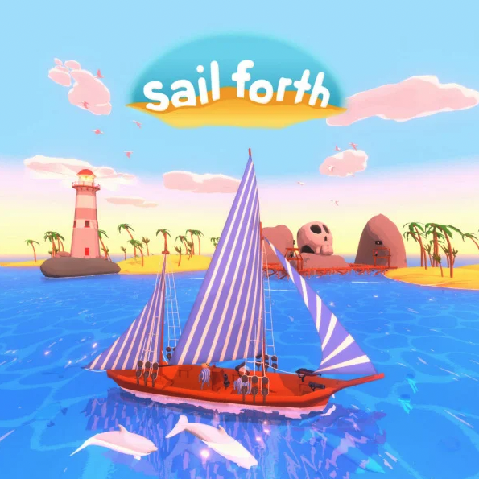Sail Forth
Sail a fleet of customizable ships across an ocean whose ancient depths have swallowed the key to the mysterious past. Befriend fishfolk to expand your boat crews, take up arms against petulant pirates, and chart a course across an expansive watery world. Will you answer the call of High Adventure?
Festive Vector is a one-person development studio (aka David Evans) based in Seattle, Washington. From inception, David’s projects focus on creating feelings of positivity, hope, and just good ol’ fun. After some time spent at Microsoft he sought to develop his first title, Bicyclism Extra Pedal. Since then, David’s sophomore project, Sail Forth, has won various awards leading up to its release including EGX Official Selection 2019, Dreamhack Best Action Adventure 2019, and Seattle Indies Expo Official Selection (2019, 2020).
The Quantum Astrophysicists Guild was founded in 2011 and received global critical acclaim for our early titles The Bridge and Tumblestone. In 2019, we focused on collaborating with indie developers publishing on PC and consoles to provide opportunities on every platform available. Recently publishing critically acclaimed games Cozy Grove and Freshly Frosted further expanded our library.Developer: Festive Vector
Publisher: The Quantum Astrophysicists Guild
@festivevector
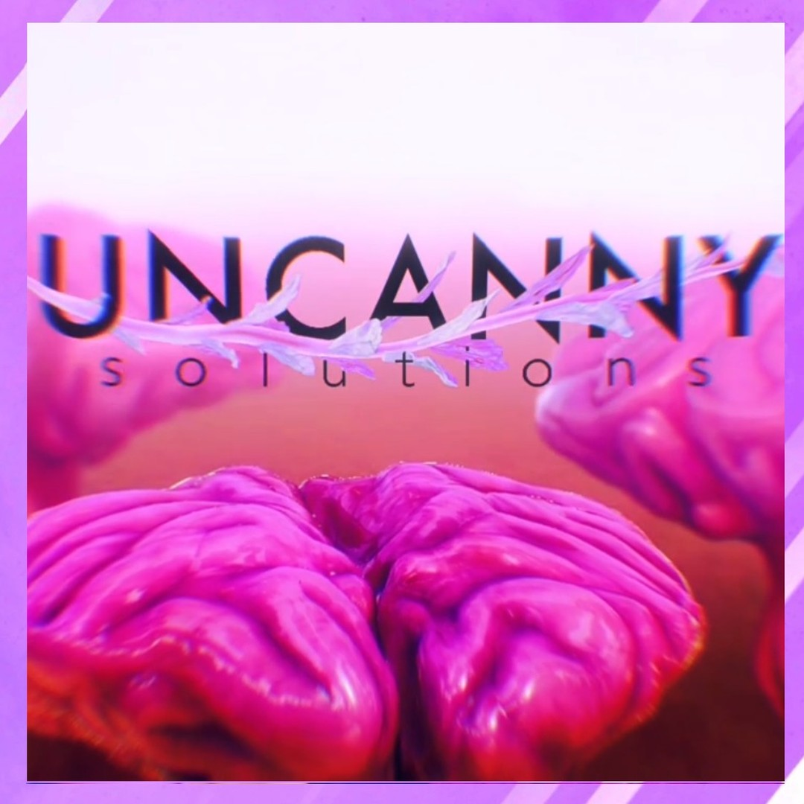Uncanny Solutions
Liz Dexia is in the Homepage! Sneek a peek as their high-tech, very natural, parody wellness brand UNCANNY SOLUTIONS comes into being. “Recent advances in the time-honored practice of genetic modification means there has never been a better time to be the best you can be, the Natural Way™.”
Working under the name Liz Dexia, gender-fluid artist Keith Womak took a dive into the world of Drag to discover what it means to be a Drag performer and in some cases, what it means to be human. After arriving in Austin 7 years ago from a background in illustration and fashion design, Drag became the focus for their creative pursuits. Using costume, performance, illustration, and a pandemic-fueled foray into video production, they have decided to bring these skills, themes, and ideas from Liz’s world into a more exploratory and interactive space.Artist: Liz Dexia
@elizabethdexia
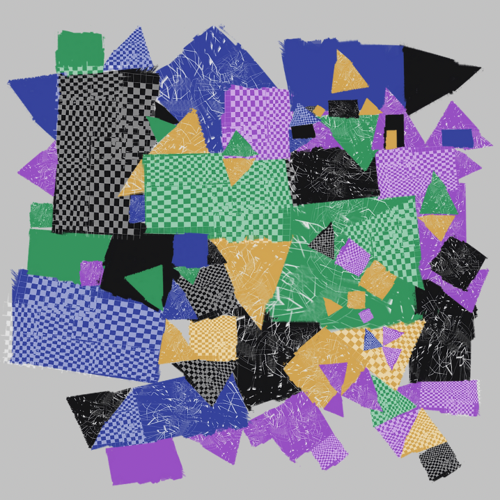Quilt
Make Droy’s Quilt is a simple gesture of caring and creativity online. As a user, you have the opportunity to contribute to a big digital quilt by choosing the shape, color, and pattern for the piece you would like to add. Make Droy then creates and weaves your requested shape into an interconnected collage of all the pieces we have made together. Quilt is a project to share as a small way to tell someone you’re thinking about them. Return often for a tiny moment of creativity.
Artist: Make Droy
Make Droy is a machine person from a muddy town who builds game mechanics and communication systems using computing power.

Gallery
Join the Community

Website created by Noah V. Carrico